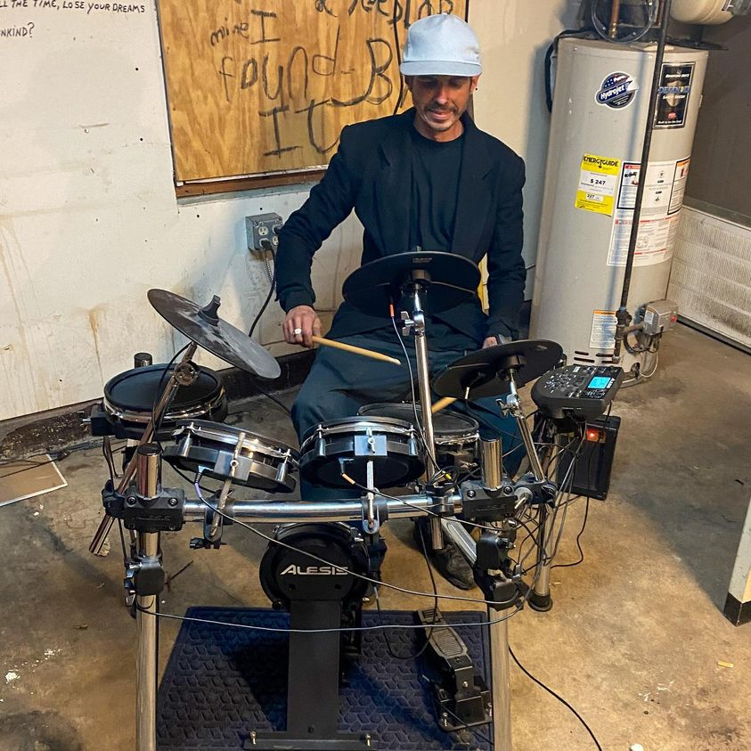

Timeline photos
My son, Indiana (who turns 19 today), donated his drum set to the homeless community here in Akron.
This is Kenny checking it out.
Kenny has been homeless for over 5 years, with a brief break when Community Support Services got him a house. He lost his house because, as he says, he wasn’t focused on the right things. He was focused on trying to figure out how to live in a neighborhood where he didn’t know anyone or know how to find food. He became very isolated and alone. That was what he was working on. But that wasn’t enough. He also needed to figure out how to make enough money to pay rent with a steady job… something he hasn’t been able to keep for a very long time.
The truth is: I believe he has very serious mental illness that has never been diagnosed because he doesn’t believe he has any mental health issues.
THAT explains a lot of why he’s lived in the woods, abandoned houses and sometimes those plastic bag recycling boxes at grocery stores.
Kenny is an artist. I’m trying to help him build outlets for his art.
This drum set is the first step in creating musical outlets for this community. (I’m working on getting a guitar for the renowned guitarist (and homeless man) Hurricane.)
We MUST find new pathways for people that have found traditional pathways to be ineffective.
I think a type of Montessori method of teaching for homeless adults could be a solution for some. Create an environment with a variety of tools and see what a person gravitates towards. Then help them develop those skills.